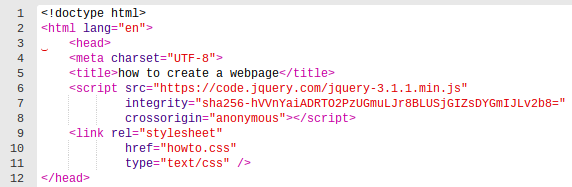
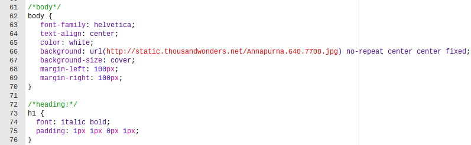
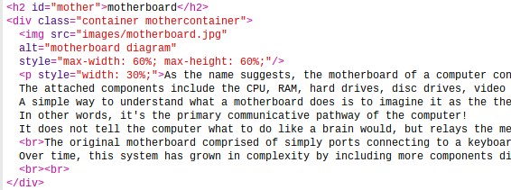

Before starting on your coding, the first thing any programmer must do with html is insert the <!DOCTYPE> tag.
This doctype tag tells the computer what kind of document to expect (the type of document), and sometimes the version of the html.
Following this are standard "head" elements that defines metadata, which is not displayed in the html itself.
The fifth line writes the title of the page, which will show on the tab, but again, not on the display.
The sixth and seventh lines link the html to other lines of code; the <script> tag links JavaScript coding (from another file) to this so it may appear in the webpage.
Similarly, the succeeding line connects the file with written CSS to the html.
The figure on the (left/right) shows the code used in the hardware page!

Creating headings is likely one of the simplest parts of designing any webpage.
Heading elements are preexistent in html, so all a coder needs to do is determine what size heading he/she would prefer.
These elements are written as <h1>, and the number indicates what kind of heading.
For example, h1 represents the main heading, while h2 can be a subheading, and h3 a sub-sub heading.
Though these elements can come with a presetting, it can be modified to taste in CSS.
I standardized the webpage so the default font of the webpage would be helvetica nue in white and would be center aligned (lines 63-65).
This reduced the amount of coding I had to specify for the heading, so all I added were stylistic touches and padding.

Similar to headings, text and images possess element tags that are straightforward means to add content to a webpage.
Body text, or paragraphs, are represented as simply <p></p>, with the content written inbetween the sets.
There are not many additions to text alone, other than the fact that to "return", the <br> (break tag) needs to be utilized.
Image tags are self closing (meaning they can fit within one bracket), but they require slightly more information.
It isn't enough to simply create an image tag; the html does not know what image to display!
At bare minimum, the src attribute needs to be added.
This tells the html where to find the image you want to include.
To secure the files, it is recommended that images are saved and uploaded to an image folder that the html can refer to.
If the image source is from the internet, the tag should look like <img src="www.google.com"/> .
An image uploaded to a folder should resemble <img src="images/picture.jpg"/> .
The second tag has two main components to understand.
Before the forward slash is the name of the folder, on the other side is the file name.
Tip: Rename your files so it is easier to locate them in the future and also easier to write into your code!
Additionally, another attribute to add is <alt> .
Although not necessary, use of this attribute is highly advised.
If, for any reason, an image does not load, this attribute will alternatively display this sample of text (usually concisely describing the image).
This can also be added into the image tag without any brackets.
Building off the previous examples, the code should now look like <img src="images/picture.jpg" alt="examplar picture"/> .

To place these two elements along the same horizontal row, a few steps were taken.
1. A <div> was placed around the elements, and then designated a class.
In the CSS, the class simply needs display: inline-block; within the brackets.
2. Inside each image and paragraph tag, I styled the width to a certain percent so the text and image would only fill a small percent of the page.
Make sure the sum of the percents equates to a percentage that is less than 100%!
This step requires a lot of trial and error, and may not be consistent for each image or text.